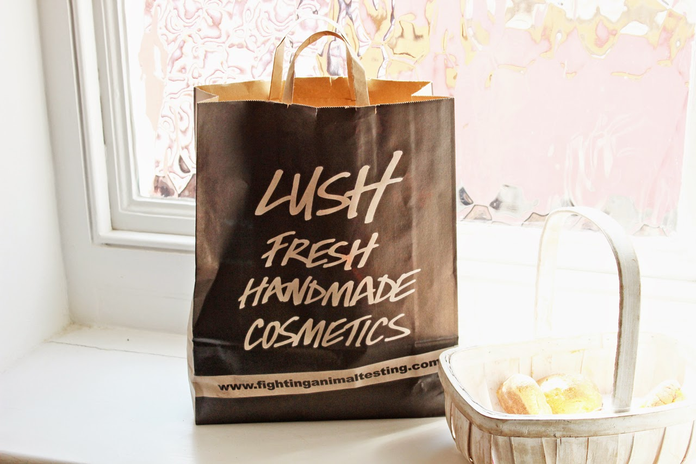
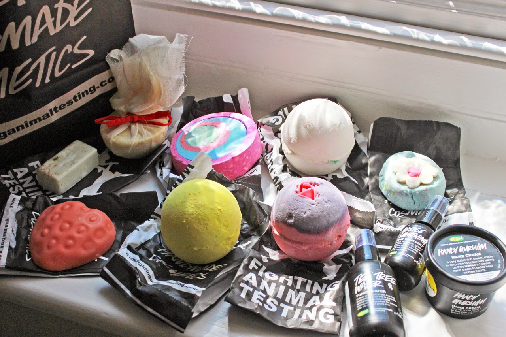
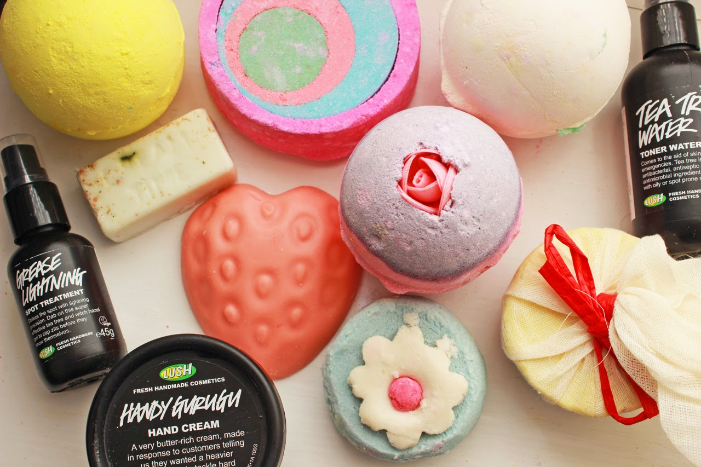
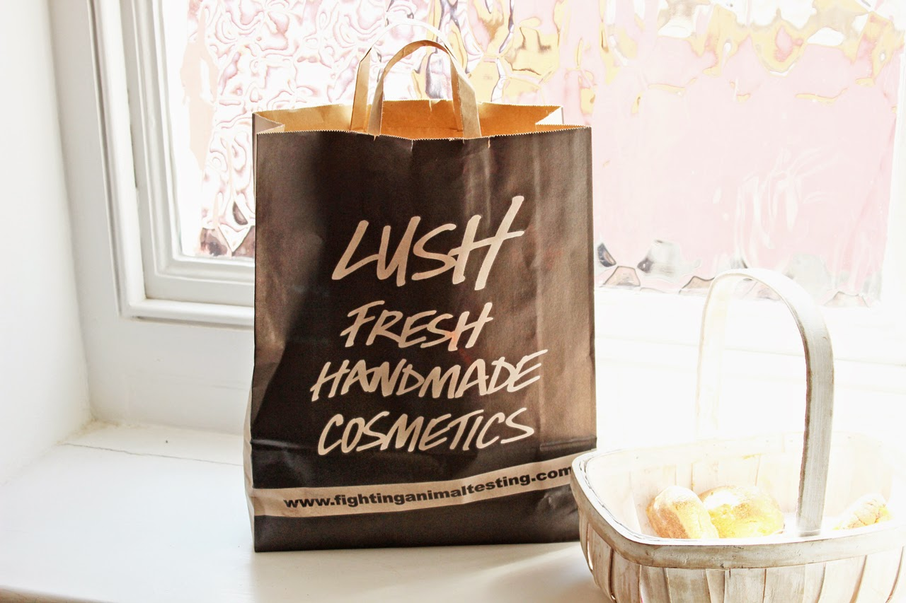
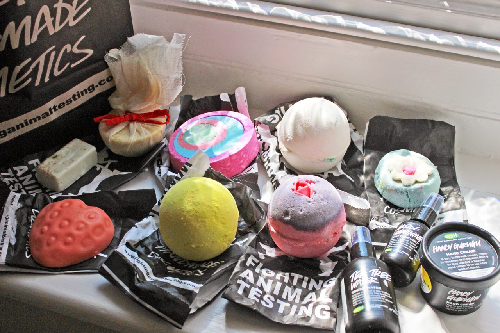

|  |


|
|---|
Face
Tea Tree Water Toner
Tea Tree is a great blemish fighter and is naturally anti-bacterial so works well at dealing with
breakouts as well as working as a toner. The spray pump is such a handy way to apply it too! I’ve
used this before and it really helped calm down my skin, and as I’m having a few hormonal
breakouts at the moment I decided to try this old favourite and see if it still worked.
Grease Lightning Spot Treatment
This is again in a useful nozzle so you can apply it directly onto blemishes. It’s so tiny so you
can keep it with you in your make up bag in case of emergencies! I have also used this before
when my skin has had little tantrums and it’s previously helped, which is why when I saw it on
the shelf, I popped it into my basket.
Bath
Dreamtime Bath Melt
This is supposed to help you relax which sounds great for a bath after a busy or stressful day.
With lavender and chamomile it smells lovely, and also softens your skin with cocoa butter.
Perfect for before bedtime. I particularly love this one in the winter or when my skin needs
a little rehydration.
Pop in the Bath Bubble Bar
These bars make such amazing bubbles! You crumble a bit off to run under the tap so you can
actually use them more than once. This one has the scent of “The Olive Branch” which is one
of my favourite Lush scents and smells amazing.
I also picked up a few of my favourite bath bombs..
Granny Takes a Dip Bath Bomb (relatively new)
Dragon’s Egg Bath Bomb
Fizzbanger Bath Bomb
Sex Bomb Bath Bomb (Ultimate fave for night time)
Strawberry Feels Forever Massage Bar
This was one of my favourite massage bars back in the day. It was released as part of a valentines
launch and stuck around for quite a while. I’m pretty sure it disappeared off the shelves for a while
and when I saw this in the store I knew I had to grab one. Massage bars start to melt when they
warm up so this is a great way to moisturise your skin after the bath. It smells like strawberries
and cream too.
Ceridwen’s Cauldron Bath Melt
This bath melt is great for soothing and moisturising skin, the muslin pouch means that it dissolves
in the water and the larger bits are kept from floating about in the bath, but also can be picked up to
apply directly onto your skin. This one is a little more pricey, but it honestly does amazing things to
your skin. I love using this as a pick me up.
Body
Handy Gurugu Hand Cream
This buttery hand cream is made with a blend of nut butters making it so creamy and softening, it
features orange extract too so has a fresh, natural scent to it. This is perfect for sorting out really
dry hands and is great for your nails too. This was one of my go-to products years ago, and I would
get through so many tubs of this. When I was in the shop I picked it up, gave it a sniff and it immediately
brought back so many memories. It really is an awesome hand cream. The only downside is that the
tub is a little bulky for your handbag, but great to keep near your sink or on your bedside table.